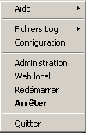
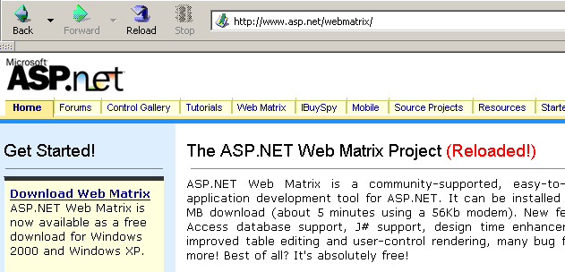

10. Anexos — Ferramentas de desenvolvimento web
Indicamos aqui onde encontrar e como instalar ferramentas gratuitas que permitem o desenvolvimento web em Java, PHP, ASP e asp.net. Algumas ferramentas tiveram as suas versões atualizadas e é possível que as explicações aqui fornecidas já não sejam adequadas para as versões mais recentes. O leitor terá, então, de se adaptar... :
- um navegador recente capaz de visualizar XML. Os exemplos do curso foram testados com o Internet Explorer 6.
- um JDK (Java Development Kit) recente. O JDK inclui o plug-in Java 1.4 para navegadores, o que permite a estes exibir applets Java utilizando o JDK 1.4.
- um ambiente de desenvolvimento Java para escrever servlets Java. Neste caso, trata-se do JBuilder 7.
- servidores web: Apache, PWS (Personal Web Server, Cassini), Tomcat.
- O Apache pode ser utilizado para o desenvolvimento de aplicações web em PERL (Practical Extracting and Reporting Language) ou PHP (Personal Home Page)
- O PWS pode ser utilizado para o desenvolvimento de aplicações web em ASP (Active Server Pages) ou PHP nas plataformas Windows. O Cassini permite o desenvolvimento em ASP.NET.
- O Tomcat é utilizado para o desenvolvimento de aplicações web utilizando servlets Java ou páginas JSP (Java Server Pages)
- um sistema de gestão de bases de dados: MySQL
- EasyPHP: uma ferramenta que integra o servidor Web Apache, a linguagem PHP e o SGBD MySQL
10.1. Servidores Web, Navegadores, Linguagens de script
- Principais servidores Web
- Apache (Linux, Windows)
- Interner Information Server IIS (NT), Personal Web Server PWS (Windows 9x), Cassini (plataformas .NET)
- Principais navegadores
- Internet Explorer (Windows)
- Netscape (Linux, Windows)
- Mozilla (Linux, Windows)
- Opera (Linux, Windows)
- Linguagens de script do lado do servidor
- VBScript (IIS, PWS)
- JavaScript (IIS, PWS)
- Perl (Apache, IIS, PWS)
- PHP (Apache, IIS, PWS)
- Java (Apache, Tomcat)
- Linguagens .NET
- Linguagens de script do lado do navegador
- VBScript (IE)
- JavaScript (IE, Netscape)
- PerlScript (IE)
- Java (IE, Netscape)
10.2. Onde encontrar as ferramentas
http://www.netscape.com/ (ligação para downloads) | |
http://www.microsoft.com/windows/ie/default.asp | |
http://www.mozilla.org | |
http://www.php.net | |
http://www.activestate.com | |
http://msdn.microsoft.com/scripting (siga o link do script do Windows) | |
http://java.sun.com/ | |
http://www.apache.org/ | |
incluído no NT 4.0 Option Pack para Windows 95 incluído no CD do Windows 98 http://www.microsoft.com/ntserver/nts/downloads/recommended/NT4OptPk/win95.asp | |
http://www.microsoft.com | |
http://jakarta.apache.org/tomcat/ | |
http://www.borland.com/jbuilder/ | |
http://www.easyphp.org/ | |
http://www.asp.net |
10.3. EasyPHP
Esta aplicação é muito prática, pois reúne num único pacote:
- o servidor Web Apache
- um interpretador PHP
- o SGBD MySQL (3.23.x)
- uma ferramenta de administração do MySQL: PhpMyAdmin
A aplicação de instalação apresenta-se da seguinte forma:

A instalação do EasyPHP decorre sem problemas e é criada uma estrutura de pastas no sistema de ficheiros:

o executável da aplicação | |
a estrutura de diretórios do servidor Apache | |
a estrutura de diretórios do MySQL SGBD | |
a estrutura de diretórios da aplicação phpMyAdmin | |
a estrutura de diretórios do php | |
Raiz da estrutura das páginas web servidas pelo servidor Apache de EasyPHP | |
árvore de diretórios onde é possível colocar scripts CGI para o servidor Apache |
A principal vantagem do EasyPHP é que a aplicação vem pré-configurada. Assim, o Apache, o PHP e o MySQL já estão configurados para funcionar em conjunto. Quando se inicia o EasyPhp através do seu atalho no menu de programas, aparece um ícone no canto inferior direito do ecrã.
 |
É o «E» com um ponto vermelho que deve piscar se o servidor web Apache e a base de dados MySQL estiverem operacionais. Ao clicar nele com o botão direito do rato, acede-se às opções do menu:

A opção Administration permite efetuar ajustes e testes de funcionamento:

10.3.1. Configuração do interpretador PHP
O botão «Informações PHP» deve permitir-lhe verificar o bom funcionamento da combinação Apache-PHP: deverá aparecer uma página de informações PHP:

O botão «Extensões» apresenta a lista das extensões instaladas para o PHP. Trata-se, na verdade, de bibliotecas de funções.

O ecrã acima mostra, por exemplo, que as funções necessárias para utilizar a base de dados MySQL estão efetivamente presentes.
O botão «Parâmetros» apresenta o login/motdepasse do administrador da base de dados MySQL.

A utilização da base de dados MySQL excede o âmbito desta breve apresentação, mas fica aqui claro que seria necessário definir uma palavra-passe para o administrador da base de dados.
10.3.2. Administração do Apache
Ainda na página de administração do EasyPHP, o link «os seus aliases» permite definir aliases associados a um diretório. Isto permite colocar páginas Web noutros locais que não o diretório www da árvore de diretórios do easyPhp.

Se, na página acima, introduzirmos as seguintes informações:

e utilizarmos o botão valider, as seguintes linhas são adicionadas ao ficheiro <easyphp>\apache\conf\httpd.conf:
Alias /st/ "e:/data/serge/web/"
<Directory "e:/data/serge/web">
Options FollowSymLinks Indexes
AllowOverride None
Order deny,allow
allow from 127.0.0.1
deny from all
</Directory>
<easyphp> indica o diretório de instalação do EasyPHP. httpd.conf é o ficheiro de configuração do servidor Apache. Por isso, é possível fazer o mesmo editando diretamente este ficheiro. Normalmente, uma alteração no ficheiro httpd.conf é imediatamente aplicada pelo Apache. Se tal não acontecer, será necessário parar o servidor e reiniciá-lo, sempre através do ícone do easyphp:
Para concluir o nosso exemplo, podemos agora colocar páginas web na estrutura de diretórios e:\data\serge\web:
e aceder a esta página utilizando o alias st:

Neste exemplo, o servidor Apache foi configurado para funcionar na porta 81. A sua porta predefinida é a 80. Este aspeto é controlado pela seguinte linha do ficheiro httpd.conf, já mencionado anteriormente:
10.3.3. O ficheiro de configuração do Apache [htpd.conf] htpd.conf
Quando se pretende configurar o Apache de forma mais detalhada, é necessário alterar «manualmente» o seu ficheiro de configuração httpd.conf, localizado aqui na pasta <easyphp>\apache\conf:

Eis alguns pontos a reter deste ficheiro de configuração:
| função |
indica a pasta onde se encontra a estrutura de diretórios do Apache | |
indica em que porta o servidor Web irá funcionar. Normalmente, é a 80. Ao alterar esta linha, é possível fazer com que o servidor Web funcione noutra porta | |
o endereço de e-mail do administrador do servidor Apache | |
o nome do computador no qual o servidor Apache está a «funcionar» | |
o diretório de instalação do servidor Apache. Quando, no ficheiro de configuração, aparecem nomes relativos de ficheiros, estes são relativos a esta pasta. | |
a pasta raiz da árvore de páginas Web servidas pelo servidor. Aqui, o URL http://machine/rep1/fic1.html corresponderá ao ficheiro E:\Program Files\EasyPHP\www\rep1\fic1.html | |
define as propriedades da pasta anterior | |
pasta de registos, ou seja, na verdade <ServerRoot>\logs\error.log: E:\Program Files\EasyPHP\apache\logs\error.log. Este é o ficheiro que deve consultar se verificar que o servidor Apache não está a funcionar. | |
E:\Program Files\EasyPHP\cgi-bin será a raiz da árvore de diretórios onde se poderão colocar os scripts CGI. Assim, o URL http://machine/cgi-bin/rep1/script1.pl será o URL do script CGI E:\Program Files\EasyPHP\cgi-bin\rep1\script1.pl. | |
define as propriedades da pasta acima | |
linhas de carregamento dos módulos que permitem ao Apache funcionar com o PHP4. | |
define os sufixos dos ficheiros a considerar como ficheiros a serem processados pelo PHP |
10.3.4. Gestão do MySQL com o PhpMyAdmin
Na página de administração do EasyPhp, clique no botão PhpMyAdmin:

A lista suspensa em Accueil permite visualizar as bases de dados atuais. |  |
O número entre parênteses corresponde ao número de tabelas. Se selecionar uma base de dados, as tabelas dessa base são apresentadas: |  |
A página Web oferece várias operações que podem ser realizadas na base de dados:

Se clicar no link Afficher de user:

Aqui existe apenas um utilizador: root, que é o administrador do MySQL. Ao seguir o link Modifier, seria possível alterar a sua palavra-passe, que atualmente está em branco, o que não é aconselhável para um administrador. Não nos alongaremos mais sobre o PhpMyAdmin, que é um software abrangente e que mereceria uma descrição de várias páginas.
10.4. PHP
Vimos como obter o PHP através da aplicação EasyPhp. Para obter o PHP diretamente, devemos aceder ao site http://www.php.net. O PHP não se limita apenas à Web. Pode ser utilizado como linguagem de script no Windows. Crie o seguinte script e guarde-o com o nome date.php:
<?
// script PHP a apresentar a hora
$maintenant=date("j/m/y, H:i:s",time());
echo "Nous sommes le $maintenant";
?>
Numa janela DOS, aceda ao diretório de [date.php] e execute-o:
dos>"e:\program files\easyphp\php\php.exe" date.php
X-Powered-By: PHP/4.2.0
Content-type: text/html
Nous sommes le 18/07/02, 09:31:01
10.5. PERL
É preferível que o Internet Explorer já esteja instalado. Se estiver presente, o Active Perl irá configurá-lo para que aceite scripts PERL nas páginas HTML, scripts esses que serão executados pelo próprio IE no lado do cliente. O site do Active Perl encontra-se em URL http://www.activestate.comA. Após a instalação, o PERL será instalado num diretório a que chamaremos <perl>. Este contém a seguinte estrutura de diretórios:
DEISL1 ISU 32 403 23/06/00 17:16 DeIsL1.isu
BIN <REP> 23/06/00 17:15 bin
LIB <REP> 23/06/00 17:15 lib
HTML <REP> 23/06/00 17:15 html
EG <REP> 23/06/00 17:15 eg
SITE <REP> 23/06/00 17:15 site
HTMLHELP <REP> 28/06/00 18:37 htmlhelp
O executável perl.exe encontra-se em <perl>\bin. O Perl é uma linguagem de script que funciona no Windows e no Unix. É também utilizada na programação do WEB. Vamos escrever um primeiro script:
# script PERL que exibe a hora
# módulos
use strict;
# programa
my ($secondes,$minutes,$heure)=localtime(time);
print "Il est $heure:$minutes:$secondes\n";
Guarde este script num ficheiro com o nome heure.pl. Abra uma janela DOS, aceda ao diretório do script anterior e execute-o:
10.6. VBScript, JavaScript, PerlScript
Estas linguagens são linguagens de script para o Windows. Podem funcionar em diferentes ambientes, tais como
- o Windows Scripting Host para utilização direta no Windows, nomeadamente para escrever scripts de administração do sistema
- Internet Explorer. É então utilizado em páginas HTML, às quais confere uma certa interatividade impossível de alcançar apenas com a linguagem HTML.
- Internet Information Server (IIS), o servidor Web da Microsoft no NT/2000, e o seu equivalente, o Personal Web Server (PWS), no Win9x. Neste caso, o VBScript é utilizado para a programação do lado do servidor Web, tecnologia denominada ASP (Active Server Pages) pela Microsoft.
O ficheiro de instalação pode ser obtido no URL: http://msdn.microsoft.com/scripting e deve seguir-se as ligações do Windows Script. São instalados:
- o contêiner Windows Scripting Host, que permite a utilização de várias linguagens de script, tais como VBScript e JavaScript, mas também outras, como o PerlScript, que vem incluído no Active Perl.
- um interpretador VBscript
- um interpretador de JavaScript
Vamos apresentar alguns testes rápidos. Vamos criar o seguinte programa vbscript:
' uma classe
class personne
Dim nom
Dim age
End class
' criação de um objeto «pessoa»
Set p1=new personne
With p1
.nom="dupont"
.age=18
End With
' exibição das propriedades da pessoa p1
With p1
wscript.echo "nom=" & .nom
wscript.echo "age=" & .age
End With
Este programa utiliza objetos. Vamos chamá-lo de objets.vbs (o sufixo vbs indica um ficheiro VBScript). Vamos para o diretório onde ele se encontra e executemo-lo:
dos>cscript objets.vbs
Microsoft (R) Windows Script Host Version 5.6
Copyright (C) Microsoft Corporation 1996-2001. All rights reserved.
nom=dupont
age=18
Agora vamos criar o seguinte programa em JavaScript que utiliza matrizes:
// tabela numa variante
// matriz vazia
tableau=new Array();
affiche(tableau);
// matriz que cresce dinamicamente
for(i=0;i<3;i++){
tableau.push(i*10);
}
// exibição da tabela
affiche(tableau);
// novamente
for(i=3;i<6;i++){
tableau.push(i*10);
}
affiche(tableau);
// tabelas multidimensionais
WScript.echo("-----------------------------");
tableau2=new Array();
for(i=0;i<3;i++){
tableau2.push(new Array());
for(j=0;j<4;j++){
tableau2[i].push(i*10+j);
}//for j
}// for i
affiche2(tableau2);
// fim
WScript.quit(0);
// ---------------------------------------------------------
function affiche(tableau){
// exibição da tabela
for(i=0;i<tableau.length;i++){
WScript.echo("tableau[" + i + "]=" + tableau[i]);
}//para
}//função
// ---------------------------------------------------------
function affiche2(tableau){
// exibição da tabela
for(i=0;i<tableau.length;i++){
for(j=0;j<tableau[i].length;j++){
WScript.echo("tableau[" + i + "," + j + "]=" + tableau[i][j]);
}// for j
}//for i
}//função
Este programa utiliza tabelas. Vamos chamá-lo de tableaux.js (o sufixo «js» indica um ficheiro JavaScript). Vamos para o diretório onde ele se encontra e executemo-lo:
dos>cscript tableaux.js
Microsoft (R) Windows Script Host Version 5.6
Copyright (C) Microsoft Corporation 1996-2001. Tous droits réservés.
tableau[0]=0
tableau[1]=10
tableau[2]=20
tableau[0]=0
tableau[1]=10
tableau[2]=20
tableau[3]=30
tableau[4]=40
tableau[5]=50
-----------------------------
tableau[0,0]=0
tableau[0,1]=1
tableau[0,2]=2
tableau[0,3]=3
tableau[1,0]=10
tableau[1,1]=11
tableau[1,2]=12
tableau[1,3]=13
tableau[2,0]=20
tableau[2,1]=21
tableau[2,2]=22
tableau[2,3]=23
Um último exemplo em Perlscript para terminar. É necessário ter o Active Perl instalado para ter acesso ao Perlscript.
<job id="PERL1">
<script language="PerlScript">
# do Perl clássico
%dico=("maurice"=>"juliette","philippe"=>"marianne");
@cles= keys %dico;
for ($i=0;$i<=$#chaves;$i++){
$cle=$cles[$i];
$valeur=$dico{$cle};
$WScript->echo ("clé=".$cle.", valeur=".$valeur);
}
# do PerlScript utilizando objetos do Windows Script
$dico=$WScript->CreateObject("Scripting.Dictionary");
$dico->add("maurice","juliette");
$dico->add("philippe","marianne");
$WScript->echo($dico->item("maurice"));
$WScript->echo($dico->item("philippe"));
</script>
</job>
Este programa demonstra a criação e a utilização de dois dicionários: um no estilo clássico do Perl e outro com o objeto Scripting Dictionary do Windows Script. Vamos guardar este código no ficheiro dico.wsf (wsf é a extensão dos ficheiros do Windows Script). Vamos para a pasta deste programa e executá-lo:
dos>cscript dico.wsf
Microsoft (R) Windows Script Host Version 5.6
Copyright (C) Microsoft Corporation 1996-2001. Tous droits réservés.
clé=philippe, valeur=marianne
clé=maurice, valeur=juliette
juliette
marianne
O Perlscript pode utilizar os objetos do contentor no qual é executado. Neste caso, tratava-se de objetos do contentor Windows Script. No contexto da programação Web, os scripts VBscript, JavaScript e Perlscript podem ser executados quer no navegador IE, quer num servidor PWS ou IIS. Se o script for um pouco complexo, pode ser aconselhável testá-lo fora do contexto da Web, no contêiner do Windows Script, tal como foi visto anteriormente. Desta forma, só será possível testar as funções do script que não utilizem objetos específicos do navegador ou do servidor. Mesmo com esta restrição, esta possibilidade continua a ser interessante, pois, em geral, é bastante pouco prático depurar scripts que se executam em servidores Web ou navegadores.
10.7. JAVA
O Java está disponível no URL: http://www.sun.com e instala-se numa estrutura de diretórios a que chamaremos <java>, que contém os seguintes elementos:
22/05/2002 05:51 <DIR> .
22/05/2002 05:51 <DIR> ..
22/05/2002 05:51 <DIR> bin
22/05/2002 05:51 <DIR> jre
07/02/2002 12:52 8 277 README.txt
07/02/2002 12:52 13 853 LICENSE
07/02/2002 12:52 4 516 COPYRIGHT
07/02/2002 12:52 15 290 readme.html
22/05/2002 05:51 <DIR> lib
22/05/2002 05:51 <DIR> include
22/05/2002 05:51 <DIR> demo
07/02/2002 12:52 10 377 848 src.zip
11/02/2002 12:55 <DIR> docs
Na pasta «bin», encontrar-se-á o javac.exe, o compilador Java, e o java.exe, a máquina virtual Java. Poderão ser realizados os seguintes testes:
- Escrever o seguinte script:
//programa Java que exibe a hora
import java.io.*;
import java.util.*;
public class heure{
public static void main(String arg[]){
// recuperar data e hora
Date maintenant=new Date();
// exibição
System.out.println("Il est "+maintenant.getHours()+
":"+maintenant.getMinutes()+":"+maintenant.getSeconds());
}//main
}//classe
- Guarde este programa com o nome heure.java. Abra uma janela DOS. Navegue até ao diretório do ficheiro heure.java e compile-o:
dos>c:\jdk1.3\bin\javac heure.java
Note: heure.java uses or overrides a deprecated API.
Note: Recompile with -deprecation for details.
No comando acima, [c:\jdk1.3\bin\javac] deve ser substituído pelo caminho exato do compilador javac.exe. Deve obter, no mesmo diretório que o heure.java, um ficheiro heure.class, que é o programa que irá agora ser executado pela máquina virtual java.exe.
- Executar o programa:
No comando acima, [c:\jdk1.3\bin\java] deve ser substituído pelo caminho exato da máquina virtual Java [java.exe].
10.8. Servidor Apache
Vimos que é possível obter o servidor Apache através da aplicação EasyPhp. Para o obter diretamente, acedemos ao site do Apache: http://www.apache.org. A instalação cria uma estrutura de diretórios onde se encontram todos os ficheiros necessários para o servidor. Chamemos a este diretório <apache>. Ele contém uma estrutura semelhante à seguinte:
UNINST ISU 118 805 23/06/00 17:09 Uninst.isu
HTDOCS <REP> 23/06/00 17:09 htdocs
APACHE~1 DLL 299 008 25/02/00 21:11 ApacheCore.dll
ANNOUN~1 3 000 23/02/00 16:51 Announcement
ABOUT_~1 13 197 31/03/99 18:42 ABOUT_APACHE
APACHE EXE 20 480 25/02/00 21:04 Apache.exe
KEYS 36 437 20/08/99 11:57 KEYS
LICENSE 2 907 01/01/99 13:04 LICENSE
MAKEFI~1 TMP 27 370 11/01/00 13:47 Makefile.tmpl
README 2 109 01/04/98 6:59 README
README NT 3 223 19/03/99 9:55 README.NT
WARNIN~1 TXT 339 21/09/98 13:09 WARNING-NT.TXT
BIN <REP> 23/06/00 17:09 bin
MODULES <REP> 23/06/00 17:09 modules
ICONS <REP> 23/06/00 17:09 icons
LOGS <REP> 23/06/00 17:09 logs
CONF <REP> 23/06/00 17:09 conf
CGI-BIN <REP> 23/06/00 17:09 cgi-bin
PROXY <REP> 23/06/00 17:09 proxy
INSTALL LOG 3 779 23/06/00 17:09 install.log
pasta dos ficheiros de configuração do Apache | |
pasta dos ficheiros de registo (monitorização) do Apache | |
os executáveis do Apache |
10.8.1. Configuração
Na pasta <Apache>\conf, encontram-se os seguintes ficheiros: httpd.conf, srm.conf, access.conf. Nas versões mais recentes do Apache, os três ficheiros foram reunidos no httpd.conf. Já apresentámos os pontos importantes deste ficheiro de configuração. Nos exemplos que se seguem, foi utilizada para os testes a versão do Apache correspondente ao EasyPhp e, consequentemente, o respetivo ficheiro de configuração. Neste ficheiro, DocumentRoot, que designa a raiz da árvore de páginas Web, é e:\program files\easyphp\www.
10.8.2. Link PHP - Apache
Para testar, crie o ficheiro intro.php com apenas a seguinte linha:
e coloque-o na raiz das páginas do servidor Apache (DocumentRoot acima). Aceda a http://localhost/intro.php. Deve aparecer uma lista de informações php:

O seguinte script PHP apresenta a hora. Já o vimos anteriormente:
<?
// time: número de milissegundos desde 01/01/1970
// «formato de exibição da data e hora»
// d: dia com 2 dígitos
// m: mês com 2 dígitos
// y: ano com 2 dígitos
// H: hora 0,23
// i: minutos
// s: segundos
print "Nous sommes le " . date("d/m/y H:i:s",time());
?>
Colocamos este ficheiro de texto na raiz das páginas do servidor Apache (DocumentRoot) e chamamo-lo date.php. Acedamos, através de um navegador, ao ficheiro URL http://localhost/date.php. Obtemos a seguinte página:

10.8.3. Link PERL-APACHE
É criado através de uma linha com o seguinte formato: ScriptAlias /cgi-bin/ "E:/Program Files/EasyPHP/cgi-bin/" no ficheiro <apache>\conf\httpd.conf. A sua sintaxe é ScriptAlias /cgi-bin/ "<cgi-bin>", em que <cgi-bin> é a pasta onde se podem colocar os scripts CGI. CGI (Common Gateway Interface) é uma norma de comunicação entre o servidor WEB e as aplicações. Um cliente solicita ao servidor Web uma página dinâmica, c.a.d, ou seja, uma página gerada por um programa. O servidor WEB deve, portanto, solicitar a um programa que gere a página. O CGI define a comunicação entre o servidor e o programa, nomeadamente o modo de transmissão de informações entre estas duas entidades. Se necessário, altere a linha ScriptAlias /cgi-bin/ "<cgi-bin>" e reinicie o servidor Apache. Em seguida, faça o seguinte teste:
- Escreva o script:
#!c:\perl\bin\perl.exe
# script PERL que exibe a hora
# módulos
use strict;
# programa
my ($secondes,$minutes,$heure)=localtime(time);
print <<FINHTML
Content-Type: text/html
<html>
<head>
<title>heure</title>
</head>
<body>
<h1>Il est $heure:$minutes:$secondes</h1>
</body>
FINHTML
;
- Coloque este script em <cgi-bin>\heure.pl, sendo que <cgi-bin> é a pasta que pode receber scripts CGI (ver httpd.conf). A primeira linha #!c:\perl\bin\perl.exe indica o caminho do executável perl.exe. Altere-o, se necessário.
- Inicie o Apache, caso ainda não o tenha feito
- Aceda, através de um navegador, ao ficheiro URL http://localhost/cgi-bin/heure.pl. Obterá a seguinte página:

10.9. O servidor PWS
10.9.1. Instalação do t
O servidor PWS (Personal Web Server) é uma versão pessoal do servidor IIS (Internet Information Server) da Microsoft. Este último está disponível nos sistemas NT e 2000. Nos computadores com Windows 9x, o PWS está normalmente disponível com o pacote de instalação do Internet Explorer. No entanto, não é instalado por predefinição. É necessário efetuar uma instalação personalizada do IE e solicitar a instalação do PWS. Este último também está disponível no «NT 4.0 Option Pack for Windows 95».
10.9.2. Primeiros testes
A raiz das páginas Web do servidor PWS é unidade:\inetpub\wwwroot, em que unidade é o disco no qual instalou o PWS. Partimos do princípio, a seguir, que essa unidade é a D. Assim, o URL http://machine/rep1/page1.html corresponderá ao ficheiro d:\inetpub\wwwroot\rep1\page1.html. O servidor PWS interpreta qualquer ficheiro com a extensão .asp (Active Server Pages) como um script que deve executar para gerar uma página HTML. O PWS funciona, por predefinição, na porta 80. O servidor web Apache também... Por isso, é necessário parar o Apache para trabalhar com o PWS, caso tenha ambos os servidores. A outra solução consiste em configurar o Apache para que funcione noutra porta. Assim, no ficheiro de configuração do Apache, substitui-se a linha «Port 80» por «Port 81»; o Apache passará a funcionar na porta 81 e poderá ser utilizado em simultâneo com o PWS. Se o PWS tiver sido iniciado e se aceder ao URL http://localhost, obtém-se uma página semelhante à seguinte:

10.9.3. Ligação PHP - PWS
- Abaixo encontra-se um ficheiro .reg destinado a alterar o registo. Clique duas vezes neste ficheiro para alterar o registo. Aqui, o dll necessário encontra-se em d:\php4 juntamente com o executável do PHP. Altere, se necessário. Os \ devem ser duplicados no caminho da DLL.
REGEDIT4
[HKEY_LOCAL_MACHINE\SYSTEM\CurrentControlSet\Services\w3svc\parameters\Script Map]
".php"="d:\\php4\\php4isapi.dll"
- Reinicie o computador para que a alteração no Registo seja aplicada.
- Crie uma pasta «php» em d:\inetpub\wwwroot, que é a raiz do servidor PWS. Depois de o fazer, ative o PWS e aceda ao separador «Avançado». Selecione o botão «Adicionar» para criar uma pasta virtual:
- Confirme tudo e reinicie o PWS. Coloque no d:\inetpub\wwwroot\php o ficheiro intro.php, que contém apenas a seguinte linha:
- Solicitar ao servidor PWS o ficheiro URL http://localhost/php/intro.php. Deve ser apresentada a lista de informações PHP já exibidas com o Apache.
10.10. Tomcat: servlets Java e páginas JSP (Java Server Pages)
O Tomcat é um servidor Web que permite gerar páginas HTML através de servlets (programas Java executados pelo servidor Web) ou de páginas JSP (Java Server Pages), páginas que combinam código Java e código HTML. É o equivalente às páginas ASP (Active Server Pages) do servidor IIS/PWS da Microsoft, onde se mistura código VBScript ou JavaScript com código HTML.
10.10.1. Instalação
O Tomcat está disponível no endereço URL: http://jakarta.apache.org. Descarrega-se um ficheiro .exe de instalação. Ao executar este programa, este começa por indicar qual o JDK que irá utilizar. Com efeito, o Tomcat necessita de um JDK para se instalar e, posteriormente, compilar e executar os servlets Java. Por isso, é necessário que tenha instalado um JDK Java antes de instalar o Tomcat. Recomenda-se a versão mais recente do JDK. A instalação irá criar uma estrutura de diretórios <tomcat>:

consiste simplesmente em descompactar este arquivo num diretório. Escolha um diretório cujo caminho contenha apenas nomes sem espaços (por exemplo, não «Program Files»), pois existe um bug no processo de instalação do Tomcat. Escolha, por exemplo, C:\tomcat ou D:\tomcat. Vamos chamar a este diretório <tomcat>. Nele encontrará uma pasta chamada jakarta-tomcat e, dentro desta, a seguinte estrutura de diretórios:
LOGS <REP> 15/11/00 9:04 logs
LICENSE 2 876 18/04/00 15:56 LICENSE
CONF <REP> 15/11/00 8:53 conf
DOC <REP> 15/11/00 8:53 doc
LIB <REP> 15/11/00 8:53 lib
SRC <REP> 15/11/00 8:53 src
WEBAPPS <REP> 15/11/00 8:53 webapps
BIN <REP> 15/11/00 8:53 bin
WORK <REP> 15/11/00 9:04 work
10.10.2. Iniciar/Parar o servidor Web Tomcat
O Tomcat é um servidor Web, tal como o Apache ou o PWS. Para o iniciar, existem ligações no menu de programas:
para iniciar o Tomcat | |
para o encerrar |
Quando se inicia o Tomcat, é apresentada uma janela do DOS com o seguinte conteúdo:

É possível minimizar esta janela do DOS. Ela permanecerá ativa enquanto o Tomcat estiver em funcionamento. Pode então passar aos primeiros testes. O servidor Web Tomcat funciona na porta 8080. Depois de iniciar o Tomcat, abra um navegador Web e aceda a http://localhost:8080. Deverá ver a seguinte página:

Siga a ligação «Servlet Examples»:

Clique no link Execute de RequestParameters e, em seguida, no de Source. Terá uma primeira visão geral do que é um servlet Java. Poderá fazer o mesmo com os links nas páginas JSP.
Para parar o Tomcat, utilize o link «Stop Tomcat» no menu de programas.
10.11. Jbuilder
O JBuilder é um ambiente de desenvolvimento de aplicações Java. Para criar servlets Java sem interfaces gráficas, não é indispensável dispor de um ambiente deste tipo. Um editor de texto e um JDK são suficientes. No entanto, o JBuilder oferece algumas vantagens em relação à técnica anterior:
- facilidade de depuração: o compilador assinala as linhas com erros num programa e é fácil localizar essas linhas
- sugestão de código: quando se utiliza um objeto Java, o JBuilder apresenta em linha a lista das suas propriedades e métodos. Isto é muito prático, tendo em conta que a maioria dos objetos Java possui inúmeras propriedades e métodos que são difíceis de memorizar.
O JBuilder está disponível no site http://www.borland.com/jbuilder. É necessário preencher um formulário para obter o software. É enviada uma chave de ativação por e-mail. Para instalar o JBuilder 7, procedeu-se, por exemplo, da seguinte forma:
- foram obtidos três ficheiros zip: para a aplicação, para a documentação e para os exemplos. Cada um destes ficheiros zip tem um link separado no site do JBuilder.
- Primeiro, instalou-se a aplicação, depois a documentação e, por fim, os exemplos
- Quando se inicia a aplicação pela primeira vez, é solicitada uma chave de ativação: trata-se da chave que lhe foi enviada por e-mail. Na versão 7, esta chave corresponde, na verdade, ao conteúdo completo de um ficheiro de texto que pode ser colocado, por exemplo, na pasta de instalação do JB7. No momento em que a chave for solicitada, deve indicar o ficheiro em questão. Feito isto, a chave não voltará a ser solicitada.
Existem algumas configurações úteis a efetuar se se pretender utilizar o JBuilder para criar servlets Java. Com efeito, a versão denominada «Jbuilder pessoal» é uma versão simplificada que, nomeadamente, não inclui todas as classes necessárias para o desenvolvimento web em Java. É possível fazer com que o JBuilder utilize as bibliotecas de classes fornecidas pelo Tomcat. Para tal, proceda da seguinte forma:
- executar o JBuilder

- ativar a opção Tools/Configure JDKs

Na secção «JDK Settings» acima, normalmente encontra-se no campo «Name» a versão «JDK 1.3.1». Se tiver uma versão mais recente do JDK, utilize o botão Change para indicar o diretório de instalação desta versão. Acima, foi indicado o diretório E:\Program Files\jdk14, onde estava instalado um JDK 1.4. A partir de agora, o JBuilder utilizará este JDK para as suas compilações e execuções. Na secção (Class, Source, Documentation) encontra-se a lista de todas as bibliotecas de classes que serão exploradas pelo JBuilder, neste caso as classes do JDK 1.4. As classes deste último não são suficientes para realizar desenvolvimento web em Java. Para adicionar outras bibliotecas de classes, utiliza-se o botão Add e indicam-se os ficheiros .jar adicionais que se pretende utilizar. Os ficheiros .jar são bibliotecas de classes. O Tomcat 4.x inclui todas as bibliotecas de classes necessárias para o desenvolvimento web. Estas encontram-se em <tomcat>\common\lib, sendo que <tomcat> é o diretório de instalação do Tomcat:

Com o botão Add, vamos adicionar estas bibliotecas, uma a uma, à lista de bibliotecas exploradas pelo JBuilder:

A partir de agora, é possível compilar programas Java em conformidade com a norma J2EE, nomeadamente os servlets Java. O JBuilder serve apenas para a compilação, sendo a execução posteriormente assegurada pelo Tomcat, de acordo com as modalidades explicadas no curso.
10.12. O servidor Web Cassini
Para trabalhar com a plataforma .NET da Microsoft, pode-se utilizar o servidor Web Cassini. Este está disponível através de outro produto denominado [WebMatrix], que é um ambiente gratuito de desenvolvimento Web nas plataformas .NET, disponível no endereço:

Seguiremos atentamente o procedimento de instalação do produto:
- descarregar e instalar a plataforma .NET (versão 1.1, de março de 2004)
- descarregar e instalar o WebMatrix
- descarregar e instalar o MSDE (Microsoft Data Engine), que é uma versão limitada do SQL Server.
Assim que a instalação estiver concluída, o produto [WebMatrix] estará disponível na lista de programas instalados:

A ligação [ASP.NET] do Web Matrix inicia o IDE de desenvolvimento do ASP.NET:

O link [Class Browser] inicia uma ferramenta de exploração de classes .NET:

Para testar a instalação, vamos executar o [WebMatrix]:
42

No arranque inicial, o [WebMatrix] solicita as características do novo projet.C; esta é a sua configuração por predefinição. É possível configurá-lo para que não exiba esta caixa de diálogo no arranque. Para tal, utiliza-se a opção [File/New File]. O [WebMatrix] permite criar esqueletos para diferentes aplicações web. Acima, indicámos com (1) que pretendíamos criar uma aplicação [ASP.ET Page], que é uma página web. Com (2), especificamos a pasta na qual essa página web será colocada. Em (3), indicamos o nome da página. Este deve ter a extensão .aspx. Por fim, em (4), especificamos que pretendemos trabalhar com a linguagem VB.NET, sendo que o [WebMatrix] também suporta as linguagens C# e J#.
Feito isto, o [WebMatrix] apresenta uma página de edição do ficheiro [demo1.aspx]. Colocamos aí o seguinte código:

- O separador [Design] permite «desenhar» a página web que se pretende criar. O processo é semelhante ao utilizado num IDE para a criação de aplicações Windows.
- O design gráfico da página web no [Design] irá gerar código HTML no separador [HTML]
- A página Web pode conter controlos que geram eventos aos quais é necessário reagir, como, por exemplo, um botão. Esses eventos serão geridos pelo código VB.NET, que será colocado no separador [Code]
- por fim, o ficheiro demo1.aspx é um ficheiro de texto que combina o código HTML e o código VB.NET, resultado do design gráfico realizado em [Design], do código HTML que foi adicionado manualmente no [HTML] e do código VB.NET inserido no [Code]. O ficheiro completo está disponível no separador [All].
- Um programador experiente em ASP.ET pode criar o ficheiro demo1.aspx diretamente com um editor de texto, sem a ajuda de nenhum IDE.
Selecionemos a opção [All]. Verifica-se que o [WebMatrix] já gerou código:
<%@ Page Language="VB" %>
<script runat="server">
' Inserir código da página aqui
'
</script>
<html>
<head>
</head>
<body>
<form runat="server">
<!-- Inserir conteúdo aqui -->
</form>
</body>
</html>
Não vamos tentar explicar este código aqui. Transformamo-lo da seguinte forma:
<html>
<head>
<title>Démo asp.net </title>
</head>
<body>
Il est <% =Date.Now.ToString("hh:mm:ss") %>
</body>
</html>
O código acima é uma combinação do código HTML com o código VB.NET. Este foi colocado entre as balizas <% ... %>. Para executar este código, utilizamos a opção [View/Start]. O [WebMatrix] inicia então o servidor Web Cassini, caso este ainda não esteja em execução

Pode-se aceitar os valores predefinidos propostos nesta caixa de diálogo e selecionar a opção [Start]. O servidor Web fica então ativo. O [WebMatrix] irá então iniciar o navegador predefinido do computador em que se encontra e solicitar o URL http://localhost:8080/demo1.aspx:

É possível utilizar o servidor Cassini fora do [WebMatrix]. O executável do servidor encontra-se em <WebMatrix>\<versão>\WebServer.exe, em que <WebMatrix> é o diretório de instalação do [WebMatrix] e <versão> é o seu número de versão:

Abramos uma janela do DOS e acedamos à pasta do servidor Cassini:
E:\Program Files\Microsoft ASP.NET Web Matrix\v0.6.812>dir
...
29/05/2003 11:00 53 248 WebServer.exe
...
Executemos o [WebServer.exe] sem parâmetros:
Aparece uma janela de ajuda:

A aplicação [WebServer], também conhecida como servidor web Cassini, aceita três parâmetros:
- /port: número da porta do serviço web. Pode ser qualquer valor. Por predefinição, o valor é 80
- /path: caminho físico de uma pasta no disco
- /vpath: pasta virtual associada à pasta física anterior. É importante ter em atenção que a sintaxe não é /path=caminho, mas sim /vpath:caminho, ao contrário do que indica o painel de ajuda acima.
Colocamos o ficheiro [demo1.aspx] na seguinte pasta:

Vamos associar à pasta física [d:\data\devel\webmatrix] a pasta virtual [/webmatrix]. O servidor web pode ser iniciado da seguinte forma:
E:\Program Files\Microsoft ASP.NET Web Matrix\v0.6.812>webserver /port:100 /path:"d:\data\devel\webmatrix" /vpath:"/webmatrix"
O servidor Cassini fica então ativo e o seu ícone aparece na barra de tarefas. Se clicarmos duas vezes nesse ícone:

Encontram-se os parâmetros de arranque do servidor. Também é possível encerrar o [Stop] ou reiniciar o servidor web [Restart]. Se clicarmos na ligação [Root URL], obtemos a raiz da árvore web do servidor num navegador:

Vamos seguir o link [demos]:

e, em seguida, o link [demo1.aspx]:

Vemos, portanto, que se a pasta física P=[d:\data\devel\webmatrix] tiver sido associada à pasta virtual V=[/webmatrix] e o servidor estiver a funcionar na porta 100, a página web [demo1.aspx], que se encontra fisicamente em [P\demos], estará acessível localmente através de URL e [http://localhost:100/V/demos/demo1.aspx].
Demonstrámos, neste caso específico, que o desenvolvimento web ASP.NET podia ser realizado com um simples editor de texto para a criação das páginas web e com o servidor web Cassini para as testar. Isto é válido independentemente da complexidade da aplicação. O IDE [WebMatrix] traz algumas facilidades ao desenvolvimento, mas poucas. Uma ferramenta como o Visual Studio.NET é muito mais eficiente, mas trata-se de um produto comercial.